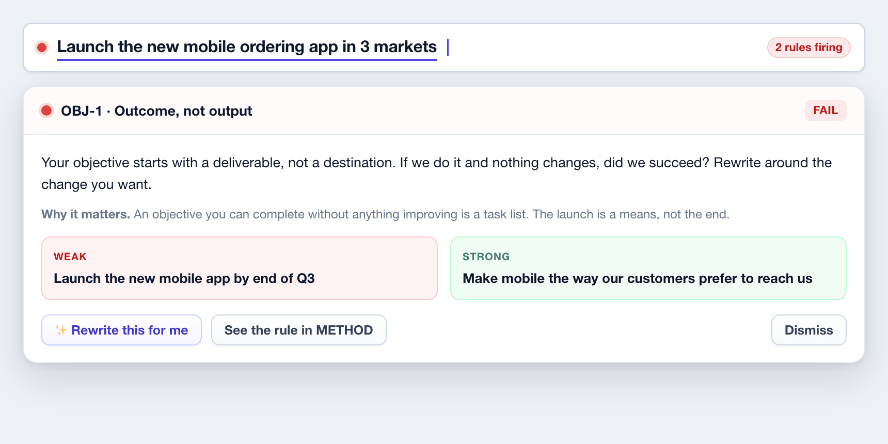

QUALITY AT THE POINT OF WRITING
Coaching that is specific, and arguable

EVERY VERDICT OPENS INTO THE RULE
The coaching prompt, why it matters, a weak-versus-strong pair, and a rewrite the user applies or dismisses. Never a bare error string, and never a mysterious red dot.
SOME OF WHAT IT CATCHES
● An objective starting with "launch". If we launch it and nothing changes, did we succeed?
● A key result with a target but no baseline. Without the "from", movement cannot be proved.
● "Hold twelve customer interviews." That is activity. What are they for? Measure that.
● Every key result lagging. You only find out at the end. Add a leading indicator.
● Average confidence above ninety percent at drafting. That is sandbagging, not a stretch.
THE PRODUCT
16